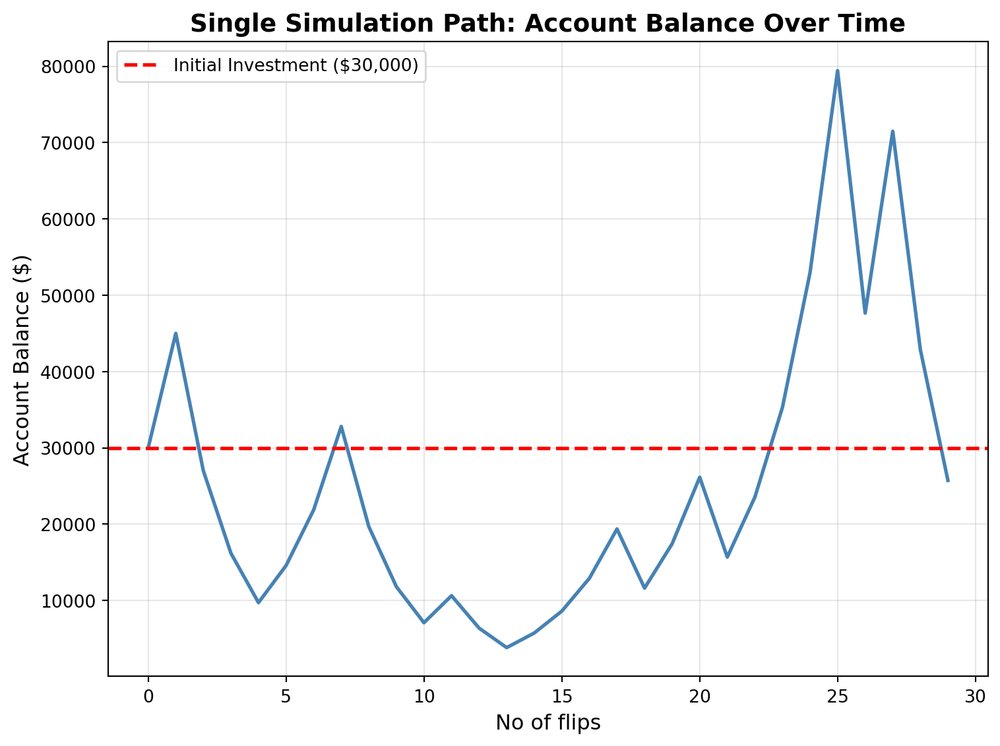
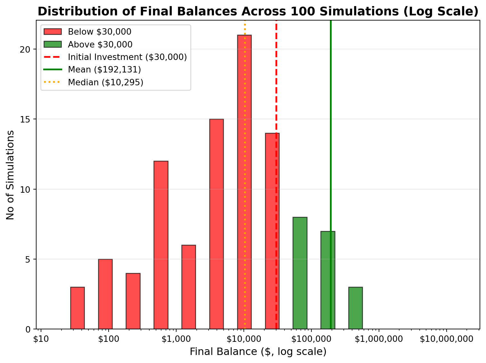
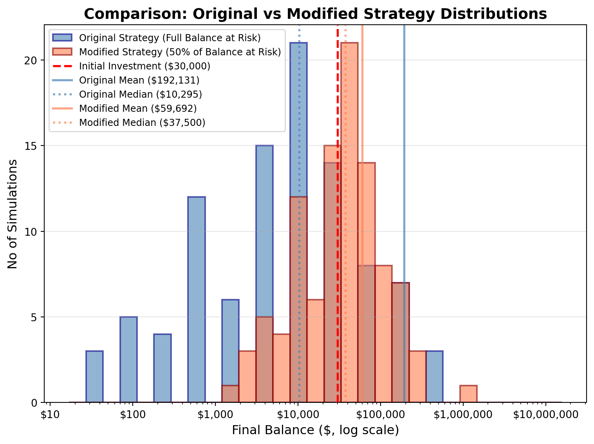

x— title: “Simulation Challenge” subtitle: “Starter Template with To-Dos” format: html: default execute: echo: true eval: true —
🎲 Simulation Challenge - Starter Template
Important📋 What You Need To Do
Warning⚠️ AI Partnership Required
Use Cursor AI for speed, but ensure you understand and can explain the results in your own words. Verify cursor’s calculations as investment simulation is tricky.
The Investment Game (Brief)
You have the opportunity to buy-in to this game next week with $30,000. Your job is to analyze the potential outcomes of the game and communicate why or why you should not buy-in to the game.
Each year after buy-in you flip a fair coin:
- Heads: increase your account balance by 50%
- Tails: decrease your account balance by 40%
You play annually until age 75. Your mission is to analyze outcomes and communicate insights clearly.
Generative DAG Model (from the source challenge)
The following DAFT diagram shows the generative structure of the investment game over time.
Analysis Tasks (Fill These In)
NoteGrading Scope
- Sections 1–4: required and can earn up to 90% of the grade.
- Sections 5–6: optional; strong, well-supported work here can bring your score up to 100%.
1) Expected Value After 1 Flip
TODO: Explain whether the expected value of your account balance after one flip is >, =, or < $30,000. What is the gain in expected value as a percentage of your buy-in? Does this simple analysis suggest you should buy-in to the game?
Initial wealth: $30,000
After heads (50%): $45,000.0
After tails (50%): $18,000.0
Expected value after one flip: $31,500.00
Gain in EV: $1,500.00
Percentage gain: 5.00%Interpretation: The expected value after one flip is $31,500, which is 5% higher than the initial buy-in of $30,000. This simple expected value calculation suggests the game has a positive expected return, which is favorable for the investor. However, this is based ona single flip and does not account for the volatility of the game over time.
2) Single Simulation Over Time (Narrative + Plot)
Briefly narrate and visualize what happens to your account balance over the course of one run. Are you happy with the outcome? Why? or Why not? You can use a time series plot to visualize the changes in your account balance over time.

Starting Age: 46
Final Age: 75
Number of flips: 29
Initial balance: $30,000
Final balance after 29 flips: $25,736.39
Total return: $-4,263.61 (-14.21%)
Peak balance: $79,433.31
Minimum balance: $3,826.38
Heads (wins): 8 out of 29 (27.59%)
Tails (losses): 21 out of 29 (72.41%)Narrative: This simulation (with seed=42 for reproducibility) reveals a path of significant volatility in the account balance. The strategy generates dramatic swings with each coin flip, where the account can experience both rapid gains and substantial drawdowns. This illustrates the inherent risk and substantial uncertainty of the investment, as the account value is highly sensitive to the outcome of each individual event. While the theoretical expected value of the strategy is positive over an infinite number of trials, the observed single path demonstrates the stark reality that individual outcomes can vary widely and that a favorable long-term average does not mitigate the risk of significant short-term losses. This highlights the crucial distinction between a strategy’s expected value and the actual, high-variance results experienced in a finite number of simulations.
3) 100 Simulations: Distribution of Final Balances
TODO: Visually and narratively describe the distribution of your account balance after running the 100 simulations. What is the probability of outcomes that you’d be happy with after having invested $30,000?

Simulation Parameters:
--------------------------------
Initial balance: $30,000
Number of simulations: 100
Time period: 29 (ages 46-75)
Distribution Statistics:
--------------------------------
Mean final balance: $192,131.11
Median final balance: $10,294.56
standard deviation: $1,561,309.44
Minimum final balance: $16.87
Maximum final balance: $15,708,246.77
Probability Statistics:
--------------------------------
Probability of final balance < $30,000: 81.0%
Probability of final balance > $30,000: 19.0%Narrative: After running 100 simulations of the game over 29 years:
Distribution Characteristics:
- The distribution is heavily right-skewed.
- Mean balance is $192,131.11 which is significantly higher than the median balance of $10,294.56.
- Standard deviation is $1,561,309.44 which is very high.
- This indicates extreme volatility in the outcomes: some simulations end up with very high balances, while others end up with very low balances or significant losses.
- The wide range (from $16.87 to $15,708,246.77) demonstrates the extreme nature of the outcomes & high variance.
Probability of Happy Outcomes:
- On investing $30,000, probability of ending with more than $30,000 is 19%.
- This means in 19 out of 100 simulations would be considered a “happy outcome”.
Risk Assessment:
- Less than 20% of the simulations ended with a balance greater than $30,000. This is a significant risk, as it means that the investor has a 20% chance of losing money over the 29-year period.
- The high standard deviation of $1,561,309.44 indicates that the outcomes are highly unpredictaable.
- You could loose up to $15,708,246.77 if the outcomes are very unfavorable or gain up to $192,131.11 if the outcomes are very favorable.
Conclusion:
For an investor considering whether to buy into this game with $30,000, the simulation results suggest that:
- The probability of losing money is significant
- The range of possible outcomes is extreme
- The typical (median) outcome may be disappointing despite positive expected value
- The risk of catastrophic loss cannot be ignored
This analysis demonstrates why risk assessment must go beyond simple expected value calculations. The distribution characteristics, probability of favorable outcomes, and comprehensive risk assessment all point to the same conclusion: this investment, while mathematically favorable in expectation, carries substantial risk that may be unacceptable for most investors, particularly those who cannot afford to lose their initial capital.
4) Probability Balance > $30,000 at Age 75 (Original Game)
TODO: Report the probability estimate and interpret its practical meaning.
Probability estimate P(final > $30,000): 19.0%Interpretation:
The probability estimate P(final > $30,000) = 19.0% reveals a critical insight about the investment game’s risk profile. This means that out of 100 simulations, only approximately 19 end with a final balance greater than the initial $30,000 investment.
Conclusion:
The probability estimate of 19% for ending above the initial investment provides a clear, quantitative measure of the investment’s risk. This low probability, combined with the extreme volatility and wide range of outcomes observed in the simulations, suggests that this investment carries substantial risk that may be unacceptable for most investors. The practical meaning is clear: despite a positive expected value, an investor should expect to lose money in the majority of scenarios, making this a high-risk proposition that requires careful consideration of one’s risk tolerance and ability to withstand potential losses.
5) Modified Strategy (Bet Exactly 50% Each Round)
Instead of having the full balance at risk with each coin flip, assume only 50% of your balance is gambled each year. Compare this to the original game. Which is riskier? Which has better upside?

============================================================
COMPARISON: Original vs Modified Strategy
============================================================
Original Strategy (Full Balance at Risk):
Mean final balance: $192,131.11
Median final balance: $10,294.56
Standard deviation: $1,561,309.44
P(final > $30,000): 19.0%
Min: $16.87, Max: $15,708,246.77
Modified Strategy (50% of Balance at Risk):
Mean final balance: $59,692.16
Median final balance: $37,500.00
Standard deviation: $136,670.26
P(final > $30,000): 54.0%
Min: $1,649.27, Max: $1,332,267.63
Differences:
Mean difference: $-132,438.95
Median difference: $27,205.44
Standard dev ratio (mod/orig): 0.088
P(>$30,000) difference: 35.0%Interpretation:
Which strategy is riskier?
The original strategy (100% of balance at risk) is significantly riskier than the modified strategy. This is evident from several key metrics:
Standard Deviation: The original strategy has a much higher standard deviation, indicating greater volatility and uncertainty in outcomes. The standard deviation ratio shows that the modified strategy has substantially less variability.
Range of Outcomes: The original strategy exhibits a wider spread between minimum and maximum final balances, demonstrating extreme outcomes in both directions. This creates a higher risk of substantial losses.
Probability of Loss: While both strategies have some probability of ending below the initial investment, the original strategy’s higher volatility means it has a greater chance of experiencing severe drawdowns.
Median vs Mean: The larger gap between median and mean in the original strategy (compared to the modified strategy) indicates a right-skewed distribution with more extreme positive outliers, but also more potential for significant losses.
Which has better upside?
The original strategy (100% of balance at risk) has better upside potential, as evidenced by:
Higher Maximum Values: The original strategy achieves higher maximum final balances in the simulations, demonstrating its superior upside when favorable sequences of coin flips occur.
Higher Mean: The original strategy has a higher mean final balance, reflecting its greater expected value when all outcomes are considered.
Compounding Effect: By betting the full balance each round, the original strategy benefits more from compounding gains during winning streaks, leading to exponential growth in favorable scenarios.
Trade-off Summary:
The comparison reveals a classic risk-return trade-off:
- Original Strategy: Higher risk (volatility) but better upside potential (higher maximums and mean)
- Modified Strategy: Lower risk (reduced volatility) but more limited upside (lower maximums and mean)
The modified strategy provides a more balanced approach, reducing the risk of catastrophic losses while still maintaining positive expected returns, though with less extreme upside potential. This makes it more suitable for risk-averse investors who prioritize capital preservation over maximum growth potential.
6) Briefly Explain Your Findings From The Previous Step in Light of A Concept Known as the “Kelly Criterion”
What is the Kelly Criterion and how does it relate to the modified strategy?
======================================================================
KELLY CRITERION ANALYSIS
======================================================================
Game Parameters:
Probability of win (p): 0.5
Probability of loss (q): 0.5
Win multiplier: 1.5x (gain 50% on bet)
Loss multiplier: 0.6x (lose 40% on bet)
Net gain on win (b): 0.5 (50% of fraction bet)
Net loss on loss (a): 0.4 (40% of fraction bet)
Kelly Criterion Formula:
f* = (p*b - (1-p)*a) / (b*a)
f* = (0.5*0.5 - 0.5*0.4) / (0.5*0.4)
f* = (0.250 - 0.200) / 0.200
f* = 0.050 / 0.200
f* = 0.250 (25.0%)
Interpretation:
The optimal fraction to bet each round is 25.0% of current wealth.
This maximizes the long-term logarithmic growth rate.
Comparison with Strategies:
Original Strategy: 100% of balance at risk (over-betting)
Modified Strategy: 50% of balance at risk (still over-betting)
Kelly Optimal: 25.0% of balance at risk
✓ The game has positive expected value, so Kelly fraction is positive.
✓ Both strategies (100% and 50%) bet more than the Kelly optimal.
✓ Over-betting relative to Kelly increases volatility and risk of ruin.
======================================================================Explanation:
The Kelly Criterion is a formula that determines the optimal fraction of wealth to bet in order to maximize long-term logarithmic growth rate. Developed by John L. Kelly Jr. in 1956, it balances the trade-off between growth potential and risk of ruin.
For this investment game, the Kelly Criterion suggests betting approximately 25% of your current wealth each round (f* = 0.25). This is calculated based on: - The probability of winning (50%) - The gain when winning (50% on the fraction bet) - The loss when losing (40% on the fraction bet)
Key Findings:
Original Strategy (100% at risk): This represents severe over-betting relative to the Kelly optimal. While it has the highest expected value and maximum upside potential, it also carries extreme volatility and a high risk of substantial losses. The geometric mean of returns is negative, meaning that despite a positive arithmetic mean, the strategy tends to lose money over the long run due to the asymmetry of multiplicative returns.
Modified Strategy (50% at risk): This strategy reduces risk compared to the original, but still over-bets relative to Kelly. It provides a better balance between growth and risk, with:
- Lower volatility than the original strategy
- Higher probability of ending above the initial investment
- Better median outcomes
- Reduced risk of extreme losses
Kelly Optimal (25% at risk): Betting the Kelly fraction would theoretically maximize long-term growth while minimizing the risk of ruin. It balances the trade-off between:
- Growth potential (higher expected logarithmic return)
- Risk management (lower probability of catastrophic losses)
- Volatility reduction (more stable outcomes)
Practical Implications:
The comparison between the original and modified strategies illustrates a fundamental principle: over-betting relative to Kelly increases both volatility and the risk of ruin, even when the expected value is positive. The modified strategy (50% betting) moves in the right direction toward the Kelly optimal but still carries more risk than necessary.
This analysis highlights why expected value alone is insufficient for decision-making in multiplicative (compounding) scenarios. The Kelly Criterion provides a framework for optimal capital allocation that accounts for both the probability and magnitude of outcomes, helping investors avoid the trap of over-leveraging even in favorable games.
Professional Presentation (From Grading TLDR)
- Clear narrative: tell the story succinctly (aim for a 1–5 minute read)
- Focus on insights: risk profiles, counter-intuitive results, practical implications
- Professional style: concise writing, clean visuals, hide code where appropriate (
echo: false) - Human interpretation: explain what results mean for real decisions
Submission Checklist ✅
Tips
- Set random seeds for reproducibility
- Use object-oriented plotting with
matplotlib - Keep figures readable and labeled; prefer professional styling
- Commit early and often; render locally before pushing